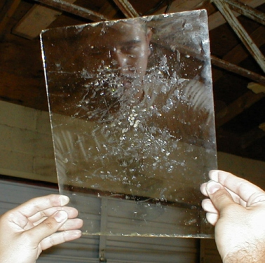
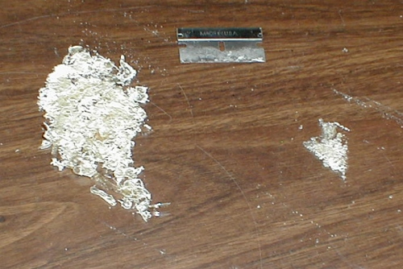
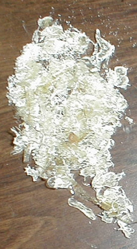

<!DOCTYPE html>
<html lang="en">
<head>
    <meta charset="UTF-8">
    <meta http-equiv="X-UA-Compatible" content="IE=edge">
    <meta name="viewport" content="width=device-width, initial-scale=1.0">
    <meta http-equiv="Content-Type" content="text/html;charset=UTF-8">
    <meta name="keywords" content="bufo alvarius,colorado river toad,sonoran desert toad,toad licking,smoke toad venom,5-meo-dmt,bufotenine">
    <meta name="description" content="Extensive information about Bufo alvarius, the Colorado River toad, Sonoran Desert toad, including the preparation and effects of its secretions, with photos, stories, links, and more.">
    <link rel="shortcut icon" href="favicon.ico" type="image/x-icon">
    <link rel="stylesheet" href="style.css">
    <script src="main.js"></script>
    <title>Bufo alvarius - Colorado River Toad Sonoran Desert Toad 5-MeO-DMT</title>
</head>
<body>
    
</body>
</html>

<!DOCTYPE html>
<html lang="en">
<head>
    <meta charset="UTF-8">
    <meta http-equiv="X-UA-Compatible" content="IE=edge">
    <meta name="viewport" content="width=device-width, initial-scale=1.0">
    <title>Document</title>
</head>
<body>
    <header>
        
        <h1>The Sonoran Desert Toad</h1>
    </header>
    <article>

    </article>
</body>
</html>

<head>
    <meta http-equiv="Content-Type" content="text/html; charset=windows-1252">
    <meta name="GENERATOR" content="Microsoft FrontPage 4.0">
    <meta name="ProgId" content="FrontPage.Editor.Document">
</head>

<body>


    <font face="Arial,Helvetica,Sans-Serif,MS Sans Serif">


        <p align="center"><b>
                <font size="6">The
                    Sonoran Desert Toad</font>
            </b></p>

        <p align="right"><a href="index.html">HOME</a></p>

        <p align="left"><b>
                <font size="5">Bufo alvarius</font>
            </b>

        </p>

        <p align="left">Ayahuasca is like a bus tour of Paris museums for several hours.
            Smoked DMT is the same tour, but strapped to the nose of a rocket, and everything goes by in 10 minutes.
            Smoked 5-MeO-DMT is like&nbsp;being strapped to the nose of a rocket that flies into the sun
            and&nbsp;evaporates.
            - Bob Wallace (just my opinion)</p>
    </font face>
    <p align="left">&nbsp;</p>

    <p align="center"><br>
        Dried venom on glass.

    <p><b>
            <font size="5">5-MeO-DMT</font>
        </b></p>

    <p><b>


            Neither the author nor publisher assume any liability for the application of the information contained in
            this
            Web site. It is presented solely for educational purposes and to serve as a record in the history of human
            experience.&nbsp;</b></p>

    <p>The <a href="erspamer.html#erspamer">research</a> to date
        tells us conclusively that 5-MeO-DMT and bufotenine are the psychoactive compounds present in the
        venom of B. alvarius. Most people assume that 5-15% of the dried material is 5-MeO-DMT
        and that 3% is bufotenine, although, this is actually <a href="erspamer.html#erspamer1">inconclusive</a>.
        The actual levels of 5-MeO-DMT and bufotenine contained in the venom
        itself may be somewhat higher than this, however, the variability in the quantity of
        these compounds present in any single toad's
        venom may render this conclusion irrelevant in practicality. One may never be completely
        certain how much of the
        active compounds are actually present in any given dose. (See <a href="erspamer.html#Table5"> Table
            5</a>)</p>

    <p>That's one basic problem with all natural sources of drugs: the potency varies greatly. This is even more of an
        issue for 5-MeO-DMT, since the dose is an important variable. One possible solution to increase the uniformity
        of the dose is to aggregate the total season's harvest and finely and thoroughly mix it together into a uniform
        consistency by crushing the venom into a fine powder using a mortar and
        pestle, or some similar device.<br>
        <br>
        Store the venom frozen in a container that blocks out light, such as a film canister for long-term storage.
        Condensation usually occurs when you take the container out of the freezer, so leave it sealed until it warms
        up.
    </p>

    <p align="left"><b>From <a href="http://de1.erowid.org/chemicals/5meo_dmt/5meo_dmt_dose.html" target="_blank">
                Erowid</a>'s
            site:</b></p>

    <p>
        5-MeO-DMT is a short acting tryptamine very similar in nature to DMT. It is generally found as very small white
        crystals (like salt) and is generally smoked. Be careful with dosages...people react very differently to
        different doses. Some individuals have world-shattering effects with less than 5 mg. Descriptions of its effects
        range from "bliss" to "chemical terror".

    <p><a href="wallace.html">Here</a> is a very well written account
        of a 5-MeO-DMT experience and an excellent response from Bob Wallace.

        Read some other experiences <a href="http://de1.erowid.org/experiences/subs/exp_5MeODMT.html"
            target="_blank">here</a>.</p>
    Smoked 5-MeO-DMT Dosages:&nbsp;<br>
    Threshold 1-2 mg&nbsp;<br>
    Light 2-5 mg&nbsp;<br>
    Common 5-10 mg&nbsp;<br>
    Strong 10-20 mg&nbsp;<br>
    <br>
    Onset : 0-30 seconds<br>
    Peak : ~1-15 minutes<br>
    Duration : ~30 minutes<br>
    Additional After Effects : ~1 hr

    <p>
        <b>


            <A name="dose"></A>Neither the author nor publisher assume any liability for the application of the
            information contained in this
            Web site. It is presented solely for educational purposes and to serve as a record in the history of human
            experience.&nbsp;</b>

    <p align="center">
        

    <p>

        <b>
            <font size="4">So what's a proper dose of toad venom?</font>
        </b>

    <p>If we assume that an average of at least 10% of the venom is 5-MeO-DMT:</p>

    <p>
        Smoked Toad Venom Dosages:&nbsp;<br>
        Threshold 10-20 mg&nbsp;<br>
        Light 20-50 mg&nbsp;<br>
        Common 50-100 mg&nbsp;<br>
        Strong 100-200 mg&nbsp;</p>

    <p>
        However, if we assume that an average of at least 25% of the venom is 5-MeO-DMT:</p>

    <p>
        Smoked Toad Venom Dosages:&nbsp;<br>
        Threshold 4-8 mg&nbsp;<br>
        Light 8-20 mg&nbsp;<br>
        Common 20-40 mg&nbsp;<br>
        Strong 40-80 mg</p>

    <p align="center">
        <b>Please keep in mind that 5-MeO-DMT is not the only active material present in
            the toad venom!&nbsp;</b>
    </p>

    <p>Toad venom contains, quite possibly, the strongest psychoactive substance on
        the planet: 5-MeO-DMT. There are two people who did high doses (of 5-MeO-DMT) and&nbsp;
        had severe anxiety problems (could not sleep for a week); one is still having anxiety problems a few years
        later. Usually, it's recommend that people start with a low dose. But so many people try 5-MeO-DMT once and just
        can not find the courage to do it again, yet at the same
        time, they will say it was a very significant life experience for them. So,
        possibly a "full" dose of perhaps 10-12 mg 5-MeO-DMT makes sense. This would be
        equivalent, in toad venom, to 40-48mg (assuming 25%) or 100-120mg (assuming
        10%). Anyone with a kind of fragile grip on reality, or who has problems with anxiety, should probably not do
        it.</p>

    <p>One very good suggestion is to start with a &quot;light&quot; dose. Assuming
        that the highest possible concentration of 5-MeO-DMT in the venom is 25%, then 16 mg of
        venom might be a good starting dose.<br>
        <br>
        The practical problem is the larger doses can be so overwhelming
        that many people just don't have the courage (and/or are too traumatized)
        to try again. But an under-dose, though perhaps disappointing, gives one more confidence
        to try the next level. Also, starting with a lower dose is
        not very &quot;expensive&quot; in terms of material used; here it's only 16 mg.<br>
        <br>
        Then as far as increasing doses, the rule of thumb heard most is:<br>
        - from a dose that does little or nothing: increase 100%<br>
        - from a dose that has significant effects: increase 50%
    </p>

    <p align="center"><b>Please keep in mind that 5-MeO-DMT is not the only active material present
            in the toad venom!&nbsp;</b></p>


    <p align="center">

    <p align="left">
        <a href="http://de1.erowid.org/library/books_online/tihkal/tihkal38.html" target="_blank">TiHKAL</a><br>
        #38. 5-MEO-DMT&nbsp;<br>
        TRYPTAMINE, 5-METHOXY-N,N-DIMETHYL; INDOLE, 5-METHOXY-3-[2-(DIMETHYLAMINO)ETHYL];
        5-METHOXY-N,N-DIMETHYLTRYPTAMINE; 5-METHOXY-3-[2-(DIMETHYLAMINO)ETHYL]INDOLE; N,N,O-TRIMETHYLSEROTONIN;
        N,N,O-TMS; BUFOTENINE METHYL ETHER; O-METHYLBUFOTENINE; OMB&nbsp;<br>
        <br>
        There is a drug-use phenomenon that is often referred to by the popular title of
        &quot;<a href="LaLaw.html">toad-licking</a>.&quot;
        The toad involved is the Sonoran Desert Toad, also called the Colorado River Toad, and carries the binomial Bufo
        alvarius. It is not the closely related marine toad Bufo marinus, as some people have insisted, prompted by the
        early Olmec and Mayan iconography. Of course the licking myth is newspaper hype -- it is the venom that is
        active, and it is smoked. When the desert toad is stroked near the parotid glands in the neck region, there is
        the squirting out of this venom and when it is allowed to dry on a hard surface it takes on the texture of
        rubber cement. It contains up to 15% 5-MeO-DMT, as well as N-methyl-5-methoxytryptamine,
        <a href="http://de1.erowid.org/library/books_online/tihkal/tihkal42.html" target="_blank"> 5-MeO-NMT</a> and
        <a href="http://de1.erowid.org/chemicals/bufotenin/bufotenin.html" target="_blank">Bufotenine</a>, which have
        their own entries.

    <p align="center">#####</p>

    <p align="left">Psychedelics (and the like) are teachers. Any teacher can give you all kinds
        of lessons - but if you don't do the homework, you don't really learn
        anything. So, even if the teacher were to explain to you why you are here in
        a human body - and you might even understand the explanation - that still leaves
        you with the fact that it's up to you to bring the lesson into fruition. Now
        you are required to work. Understanding your lessons and living/experiencing
        them are two different things. You can sit in the stands and talk about the
        game or you can get in there and play it. So, if you're not using drugs in
        order to escape - maybe you are using drugs in order to explore and expand
        your consciousness - then when you are given good information, you must take
        ACTION and integrate the lesson into your soul as an experience - instead of just an
        intellectual concept. This is the difference between knowledge and wisdom. So, it
        sounds like what has been happening is people are getting the ah-ha!s which
        are very exciting. But then applying that knowledge into everyday, mundane
        life can be extremely trying - change is difficult and takes longer than we
        would like. But the true rewards come when you actually work at something that requires effort.
        Growth
        comes at its own Earth-bound pace. Psychedelics can light the way but you
        must still walk the path.&nbsp;
        <br>
        <br>
        "soma junkie" wrote in message:
    </p>

    <p align="left">

        IMO, I think people put too much emphasis on the mystical experience. They are
        enlivening and fun and can be astounding but ultimately, if you can't put your experiences to any practical use
        to change how you see the world on an
        everyday basis, change the way you treat yourself and other people even on a mundane level, then it's just a
        bunch of fireworks and fanfare for nothing. IOW, vanity.
        I'm not saying that mystical experiences with or without drugs are useless, just that buying into them are like
        mistaking the signposts on the path
        for the destination.
        It's just like what Boris said, after the experience comes and goes, and you're left back where you started,
        perhaps not even sure whether your experience
        has any worth.
        In his original post Boris wrote:<br>

        However, it all fades, both the sense of importance of the answer and the answer itself. I'm not even sure what
        the answer is or whether it ever was something that could be considered in terms of things in this universe.<br>
        I guess that's what our job is...to find some way to translate that vision into our everyday life. If it is
        authentic, in that it isn't a delusion and was
        actually seeing things as they truly are, then it would be important to me to at least attempt this.
    </p>

    <p align="left">
        peace<br>
        brian<br>
        /(o\<br>
        \o)/
    </p>

</body>

</html>